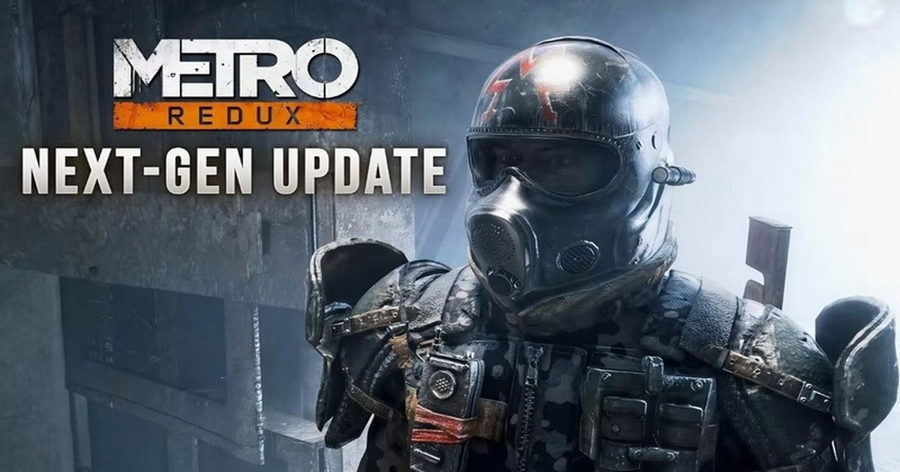

Для Metro 2033 Redux и Metro: Last Light Redux выпущены обновления с поддержкой нейронного рендеринга DLSS 5
Шутеры Metro 2033 Redux и Metro: Last Light Redux получили официальную поддержку технологии нейронного рендеринга Nvidia DLSS 5.
Соответствующее обновление для игр было выпущено 22 октября.
Источник изображений: TweakTown